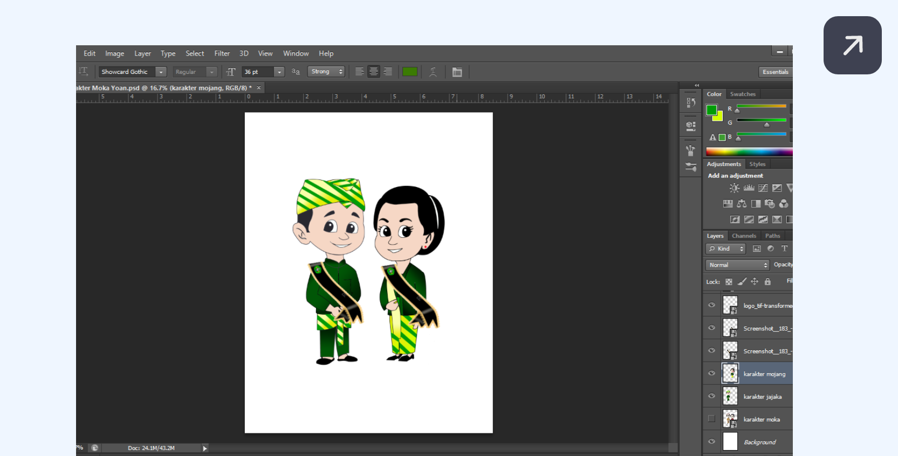
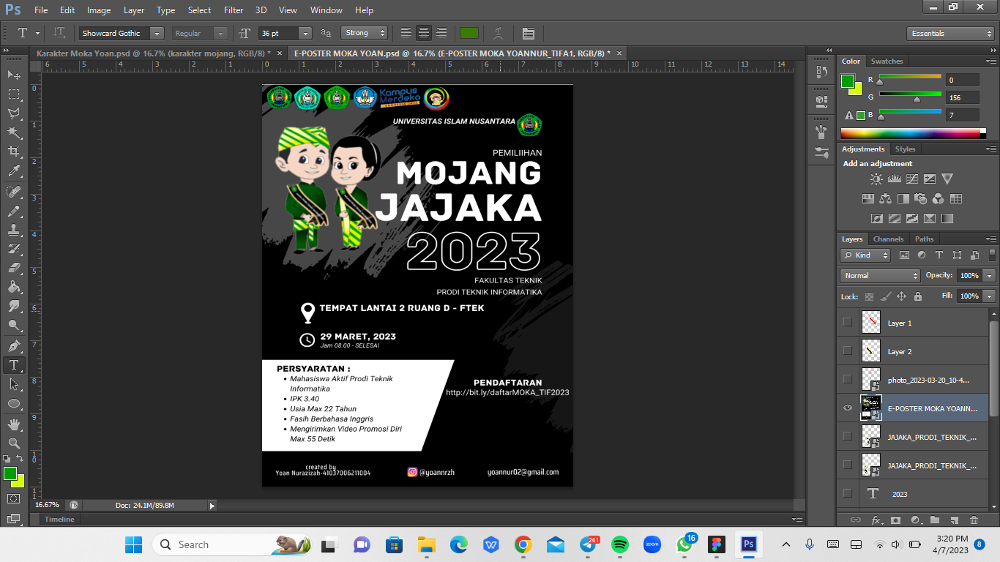
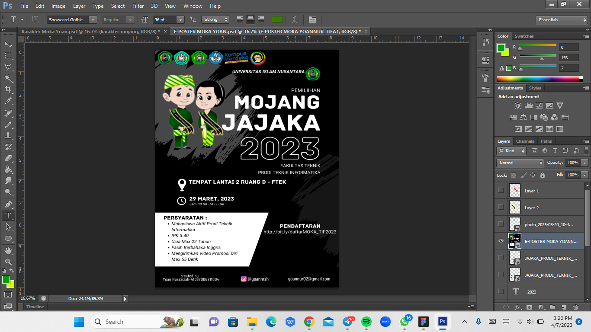
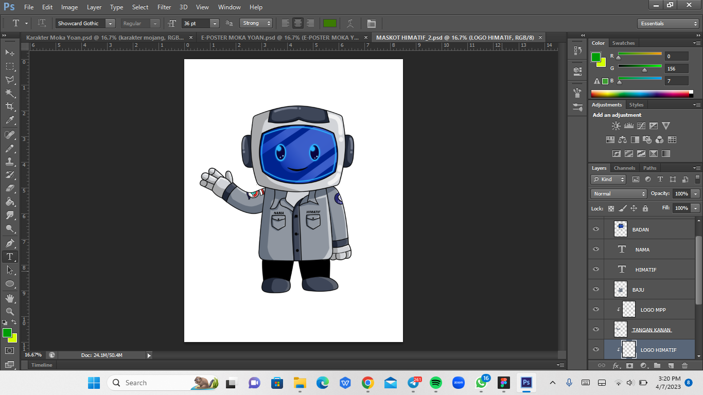
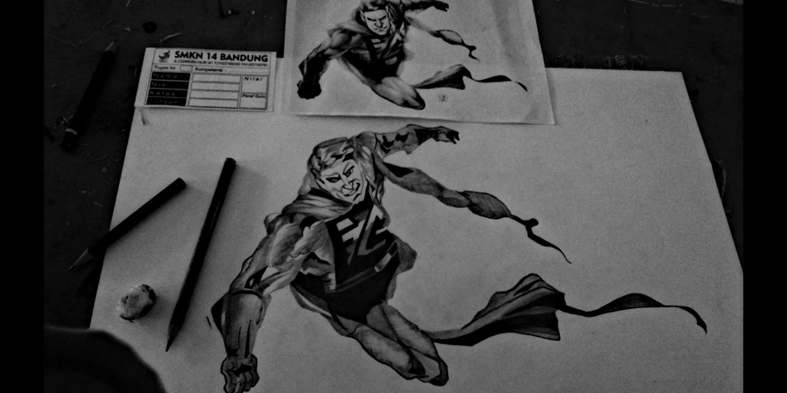
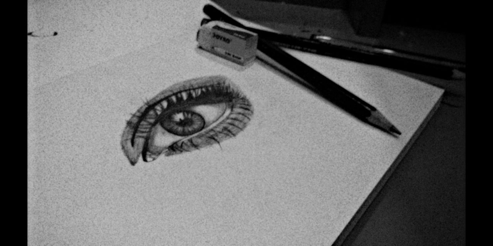

Desktop Version
Hi Im Yoan Nurazizah
Saya adalah seorang di bidang Desain Grafis, lahir di Bandung. Saya lulusan di SMKN 14 BANDUNG dengan Jurusan Animasi. Saya telah memiliki pengalaman kerja praktik selama 3 bulan di bidang Desain Grafis.
Skill

Photoshop
Picsart


Canva
Filmora


Medibang Paint
Ibis PaintX


yoannrzh
Biografi
What I do
Fun Art

Desain Grafis
Desain grafis melibatkan unsur-unsur kreativitas, inovasi, estetika, dan keharmonisan dalam penyusunan elemen visual.

Featured Project
Fun Art
Seni Penggemar
Seni Penggemar atau biasa disebut Fun Art adalah karya seni buatan penggemar dari sebuah karya fiksi (umumnya media visual seperti komik, film, acara televisi dll) dan berasal dari serangkaian karakter atau aspek lain dari karya tersebut.

Desain Grafis
Kerja Senang Desain Grafis
Desain grafis atau rancang grafis adalah proses komunikasi menggunakan elemen visual, seperti tipografi, fotografi, serta ilustrasi yang dimaksudkan untuk menciptakan persepsi akan suatu pesan yang disampaikan. Bidang ini melibatkan proses komunikasi visual dan desain komunikasi.
Cuplikan Desain Grafis
 



